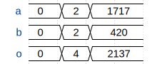

Simulator
Testing and debugging a design using hardware is often difficult, lengthy, and costly. The amaranth.sim module, also known as the simulator, makes it possible to evaluate a design’s functionality in an artificial environment before synthesis.
Todo
Document how multiple testbenches work
Deprecate using generator functions
Simulating circuits
The following examples simulate one of the two designs below: synchronous counter running in the sync clock domain, and combinational adder. They assume familiarity with the language guide.
from amaranth.lib import wiring
from amaranth.lib.wiring import In, Out
class Counter(wiring.Component):
en: In(1, init=1)
count: Out(4)
def elaborate(self, platform):
m = Module()
with m.If(self.en):
m.d.sync += self.count.eq(self.count + 1)
return m
class Adder(wiring.Component):
a: In(16)
b: In(16)
o: Out(17)
def elaborate(self, platform):
m = Module()
m.d.comb += self.o.eq(self.a + self.b)
return m
Running a simulation
Simulating a design always requires the three basic steps: constructing the DUT, constructing a Simulator for it, and running the simulation with the Simulator.run() or Simulator.run_until() method:
from amaranth.sim import Simulator
dut = Counter()
sim = Simulator(dut)
sim.run()
However, the code above neither stimulates the DUT’s inputs nor measures the DUT’s outputs; the Simulator.run() method also immediately returns if no stimulus is added to the simulation. To make it useful, several changes are necessary:
The
Simulator.add_clock()method adds a stimulus: a process external to the DUT that manipulates its inputs (in this case, toggles the clock of thesyncdomain).The
Simulator.run_until()method runs the simulation until a specific deadline is reached.The
Simulator.write_vcd()method captures the DUT’s inputs, state, and outputs, and writes it to a VCD file.
The following code simulates a design and capture the values of all the signals used in the design for each moment of simulation time:
dut = Counter()
sim = Simulator(dut)
sim.add_clock(1e-6) # 1 µs period, or 1 MHz
with sim.write_vcd("example1.vcd"):
sim.run_until(1e-6 * 15) # 15 periods of the clock
The captured data is saved to a VCD file example1.vcd, which can be displayed with a waveform viewer such as Surfer or GTKWave:
![{'head': {'tock': 0}, 'signal': [{'name': 'clk', 'wave': 'lp..............'}, {'name': 'rst', 'wave': 'l...............'}, {'name': 'en', 'wave': 'h...............'}, {'name': 'count', 'wave': '================', 'data': ['0', '1', '2', '3', '4', '5', '6', '7', '8', '9', '10', '11', '12', '13', '14', '15']}], 'config': {'skin': 'default'}}](_images/simulator/example1.svg)
Testing synchronous circuits
To verify that the DUT works as intended during a simulation, known values are provided as the inputs, and the outputs are compared with the expected results.
This is done by adding a different type of stimulus to the simulator, a testbench: an async Python function that runs concurrently with the DUT and can manipulate the signals used in the simulation. A testbench is added using the Simulator.add_testbench() method, and receives a SimulatorContext object through which it can interact with the simulator: inspect the value of signals using the ctx.get() method, change the value of signals using the ctx.set() method, or wait for an active edge of a clock domain using the ctx.tick() method.
The following example simulates a counter and verifies that it can be stopped using its en input:
dut = Counter()
async def testbench_example2(ctx):
await ctx.tick().repeat(5) # wait until after the 5th edge of the `sync` domain clock
assert ctx.get(dut.count) == 5 # verify that the counter has the expected value
ctx.set(dut.en, False) # deassert `dut.en`, disabling the counter
await ctx.tick().repeat(5) # wait until after the 10th edge of clock
assert ctx.get(dut.count) == 5 # verify that the counter has not been incrementing
ctx.set(dut.en, True) # assert `dut.en`, enabling the counter again
sim = Simulator(dut)
sim.add_clock(1e-6)
sim.add_testbench(testbench_example2) # add the testbench; run_until() calls the function
with sim.write_vcd("example2.vcd"):
sim.run_until(1e-6 * 15)
Since this circuit is synchronous, and the ctx.tick() method waits until after the circuit has reacted to the clock edge, the change to the en input affects the behavior of the circuit on the next clock cycle after the change:
![{'head': {'tock': 0}, 'signal': [{'name': 'clk', 'wave': 'lp..............'}, {'name': 'rst', 'wave': 'l...............'}, {'name': 'en', 'wave': 'h....0....1.....'}, {'name': 'count', 'wave': '======.....=====', 'data': ['0', '1', '2', '3', '4', '5', '6', '7', '8', '9', '10']}], 'config': {'skin': 'default'}}](_images/simulator/example2.svg)
Testing combinational circuits
A testbench that tests a combinational circuit advances simulation time using the ctx.delay() method instead of the ctx.tick() method, since the simulation does not contain a clock in this case. The Simulator.run() method stops the simulation and returns once all testbenches finish executing.
The following example simulates an adder:
dut = Adder()
async def testbench_example3(ctx):
await ctx.delay(1e-6)
ctx.set(dut.a, 2)
ctx.set(dut.b, 2)
assert ctx.get(dut.o) == 4
await ctx.delay(1e-6)
ctx.set(dut.a, 1717)
ctx.set(dut.b, 420)
assert ctx.get(dut.o) == 2137
await ctx.delay(2e-6)
sim = Simulator(dut)
sim.add_testbench(testbench_example3)
with sim.write_vcd("example3.vcd"):
sim.run()
Since this circuit is entirely combinational, and the Amaranth simulator uses a zero-delay model of combinational circuits, the outputs change in the same instant as the inputs do:
Replacing circuits with code
Note
This section describes an advanced technique that is not commonly used. If you are first learning how to use the simulator, you can skip it.
During simulation, it is possible to replace an Amaranth circuit with the equivalent Python code. This can be used to improve simulation performance, or to avoid reimplementing complex Python algorithms in Amaranth if they do not need to be synthesized.
This is done by adding a process to the simulator: an async Python function that runs as an integral part of the simulation, simultaneously with the DUT. A process is added using the Simulator.add_process() method, and receives a SimulatorContext object through which it can interact with the simulator. A process is conceptually similar to a testbench but differs from it in two important ways:
Testbenches run in a well-defined order (from first to last in the order they were added, yielding control only at
awaitpoints) and cannot observe inconsistent intermediate states of a design, but processes run in an undefined order while the design is converging after a change to its inputs.In a process, it is not possible to inspect the value of a signal using the
ctx.get()method, which guarantees that inconsistent intermediate states of a design cannot be observed by a process either.
A process communicates with the rest of the design in the same way an elaboratable would: through Signals.
Replacing synchronous circuits
Processes cannot inspect values of signals using the ctx.get() method. Instead, values of signals in a synchronous process are sampled at each active edge of the clock domain (or, for domains with asynchronous reset, at the assertion of the reset signal) using the ctx.tick() method.
The following code replaces the Counter elaboratable with the equivalent Python code in a process, and uses a testbench to verify its correct operation:
m = Module()
m.domains.sync = cd_sync = ClockDomain()
en = Signal(init=1)
count = Signal(4)
async def process_example4(ctx):
count_value = 0 # initialize counter to 0
async for clk_edge, rst_value, en_value in ctx.tick().sample(en):
if rst_value: # can be asserted with or without clk_edge
count_value = 0 # re-initialize counter
elif clk_edge and en_value:
count_value += 1 # advance the counter
ctx.set(count, count_value) # publish its value to the simulation
async def testbench_example4(ctx):
await ctx.tick().repeat(5)
assert ctx.get(count) == 5
ctx.set(en, False)
await ctx.tick().repeat(5)
assert ctx.get(count) == 5
ctx.set(en, True)
sim = Simulator(m)
sim.add_clock(1e-6)
sim.add_process(process_example4)
sim.add_testbench(testbench_example4)
with sim.write_vcd("example4.vcd", traces=(cd_sync.clk, cd_sync.rst, en, count)):
sim.run()
Unless it is instructed otherwise, the Simulator.write_vcd() method only captures values of signals that appear in the circuit provided to the simulator when it is created. The en and count signals do not, and are added explicitly using the traces argument so that they will appear in the VCD file.
Replacing combinational circuits
Values of signals in a combinational process are sampled anytime they change using the ctx.changed() method.
The following code replaces the Adder elaboratable with the equivalent Python code in a process, and uses a testbench to verify its correct operation:
m = Module()
a = Signal(16)
b = Signal(16)
o = Signal(17)
async def process_example5(ctx):
async for a_value, b_value in ctx.changed(a, b):
ctx.set(o, a_value + b_value)
async def testbench_example5(ctx):
await ctx.delay(1e-6)
ctx.set(a, 2)
ctx.set(b, 2)
assert ctx.get(o) == 4
await ctx.delay(1e-6)
ctx.set(a, 1717)
ctx.set(b, 420)
assert ctx.get(o) == 2137
await ctx.delay(2e-6)
sim = Simulator(m)
sim.add_process(process_example5)
sim.add_testbench(testbench_example5)
with sim.write_vcd("example5.vcd", traces=[a, b, o]):
sim.run()
Reference
Todo
Finish this
- class amaranth.sim.Simulator(toplevel)
Simulator for Amaranth designs.
Todo
Write this
- Parameters:
toplevel (
Elaboratable) – Simulated design.
- add_clock(period, *, phase=None, domain='sync', if_exists=False)
Add a clock to the simulation.
Adds a stimulus that toggles the clock signal of
domainat a 50% duty cycle.The driven clock signal will toggle every
period / 2seconds starting atphaseseconds after the beginning of the simulation; if not specified,phasedefaults toperiod / 2to avoid coinciding the first transition with the beginning of the simulation.The clock domain to drive is selected by the
domainargument, which may be aClockDomaininstance or astr. If it is a string, the clock domain with that name is retrieved from thetoplevelelaboratable.
- add_testbench(constructor, *, background=False)
Add a testbench to the simulation.
Adds a testbench that runs concurrently with the
toplevelelaboratable and is able to manipulate its inputs, outputs, and state.The behavior of the testbench is defined by its constructor function, which is an
asyncfunction that takes a single argument, theSimulatorContext:async def testbench(ctx): ... await ctx.tick() ... sim.add_testbench(testbench)
This method does not accept coroutines. Rather, the provided
constructorcoroutine function is called immediately when the testbench is added to create a coroutine, as well as by thereset()method.The testbench can be critical (the default) or background (if the
background=Trueargument is specified). Therun()method will continue advancing the simulation while any critical testbenches or processes are running, and will exit when only background testbenches or processes remain. A background testbench can temporarily become critical using thecritical()context manager.
- add_process(process)
Add a process to the simulation.
Adds a process that is evaluated as a part of the
toplevelelaboratable and is able to replace circuits with Python code.The behavior of the process is defined by its constructor function, which is an
asyncfunction that takes a single argument, theSimulatorContext:async def process(ctx): async for clk_edge, rst, ... in ctx.tick().sample(...): ... sim.add_process(process)
This method does not accept coroutines. Rather, the provided
constructorcoroutine function is called immediately when the procss is added to create a coroutine, as well as by thereset()method.Processes can be critical or background, and are always background when added. The
run()method will continue advancing the simulation while any critical testbenches or processes are running, and will exit when only background testbenches or processes remain. A background process can temporarily become critical using thecritical()context manager.
- run()
Run the simulation indefinitely.
This method advances the simulation while any critical testbenches or processes continue executing.
- run_until(deadline)
Run the simulation until a specific point in time.
This method advances the simulation until the simulation time reaches
deadline, without regard for whether there are critical testbenches or processes executing.
- write_vcd(vcd_file, gtkw_file=None, *, traces=())
Capture waveforms to a file.
This context manager captures waveforms for each signal and memory that is referenced from
toplevel, as well as any additional signals or memories specified intraces, and saves them tovcd_file. Ifgtkw_fileis provided, it is populated with a GTKWave save file displayingtraceswhen opened.Use this context manager to wrap a call to
run()orrun_until():with sim.write_vcd("simulation.vcd"): sim.run()
The
vcd_fileandgtkw_filearguments accept either a file object or a filename. If a file object is provided, it is closed when exiting the context manager (once the simulation completes or encounters an error).The
tracesargument accepts a trace specification, which can be one of:A
ValueLikeobject, such as aSignal;A
MemoryDataobject or an individual row retrieved from one;An interface object.
- reset()
Reset the simulation.
This method reverts the simulation to its initial state:
The value of each signal is changed to its initial value;
The contents of each memory is changed to its initial contents;
Each testbench and process is restarted.
- class amaranth.sim.SimulatorContext(...)
Todo
Write this